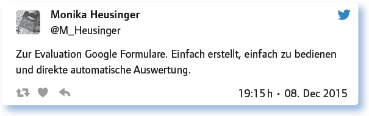

von Urs Henning
Feedback gehört nach John Hattie zu den Top-10-Einflussfaktoren für schulischen Lernerfolg. Kommunikation ist neben Kollaboration, kritischem Denken und Kreativität eine der vier Kernkompetenzen des 21. Jahrhunderts. Um diese zwei komplexen Themen geht es in diesem #EDchatDE.
Neben dem kollegialen Feedback und dem Feedback durch die Schulleitung rückt immer mehr auch das Feedback von Schülern an Lehrer ins Zentrum. Hattie sagt, dass Feedback dann am wirkungsvollsten sei, wenn es von Schülern an Lehrer gegeben werde, denn es helfe, Lernen sichtbar zu machen. Schließlich wird auch immer mehr erkannt, das korrektes Peer-Feedback sehr wirksam sein kann.
Und die Kommunikation? Der Lehrer muss eigentlich ein Kommunikationsprofi sein mit Blick auf die unterschiedlichsten Ansprüche und Erwartungshaltungen der Lernenden, der Eltern, der Kollegen, der Schulleitung und der Außenstehenden. Ist die Kommunikation an der Schule transparent, wird sie gelebt, gibt es eine E-Mail Netiquette oder sogar ein internes Wiki, trifft man sich in Gremien, haben Schüler und Eltern wirklich etwas zu sagen?
Feedbackkultur – was sollen wir darunter verstehen und welche lernrelevanten Informationen sind hier wichtig?
Die Teilgeber betonten, dass eine Feedbackkultur wichtig ist und gaben einige Aspekte an, wie sie gestaltet werden kann.
Feed up (Ziel) – feed back (Fortschritt) – feed forward (Wie geht es weiter?) (visible Learning).
Feedback als Instrument, Selbstwahrnehmung mit Fremdwahrnehmung abgleichen.
Feedback ist eine Rückmeldung. Damit es lernrelevant ist, sollte es konstruktiv sein und Alternativen aufzeigen.
Respektvoller Austausch aller an der Schule Beteiligten – Fokus: Wie kann besser gelernt werden?
Feedbackkultur betrifft alle, die professionell am Schulleben teilnehmen.
Feedback verringert die eigenen blinden Flecken. Muss man auch wollen. Daher Feedback nicht ungefragt geben.
Regelmäßige und strukturierte Rückmeldungen und Austausch zwischen Lehrern, Schülern und Schulleiter, z. T. auch Eltern.
Feedback geben heißt, Informationen zu geben und nicht, den anderen zu verändern. Das darf er gegebenenfalls selbst entscheiden.
Feedback muss kriteriengeleitet, transparent, kontinuierlich, progressiv erfolgen.
Feedback wirkt in beide Richtungen. Am wirkungsvollsten ist es, wenn es vom Schüler ausgeht: Wie kann das konkret aussehen?
Neben dem Feedback unter Schülern wurde auch aufgezeigt, wie das Feedback zwischen Schülern und Lehrern gestaltet werden kann.
Learning may end with a grade but begins with a feedback.
Die Auswertung des Feedbacks sollte auf jeden Fall offen und transparent sein.
Der Lehrer soll Modell bzw. Kriterien für konstruktives Feedback vorgeben.
Wichtig ist, dass Schüler lernen, sich gegenseitig Feedback zu geben. Hier ältere Beispiele, heute stärker digital: https://t.co/C49qsrnHfQ
Den Schülern Gelegenheit geben, sich zu äußern, nach einer Klausur, am Semesterende oder in schwierigen Situationen.
Die Befähigung zur Selbstreflexion (Selbstkompetenz) spielt eine wichtige Rolle, wenn es um förderliches Feedback geht.
Eine Kollegin hat einen Schuhkarton im Klassenzimmer. Schüler können anonym rückmelden.
Bei Kommunikation bevorzuge ich Transparenz und Offenheit.
Auch ruhig mal als anonyme Feedbacks nach heiklen Themen, praktisch sieht das dann bei mir z. B. so aus: https://t.co/yVlndw1Lgp
Welche (digitalen) Werkzeuge gibt es, um individuelles Feedback in einer großen Gruppe möglich zu machen?
Die Teilgeber nannten einige Beispiele:

Kollegiale Unterrichtshospitation: Chance oder Aktionismus? Praktiziert man das an deiner Schule? Wie? Wie ist der Ertrag?
Die Unterrichtshospitation wurde zwar als sinnvoll im Rahmen des Teamteachings gesehen, aber die Praxis funktioniert anscheinend noch nicht befriedigend und ist verbesserungswürdig:
Eine sehr gute Möglichkeit, um sich gegenseitig Feedback zu geben und neue Ideen zu bekommen.
Kollegiale Unterrichtshospitation mit viel Potenzial, wenn geeignetes Konzept dahinter steht, das vom Kollegium getragen wird.
Wir haben kollegiale Hospitationen. Wenn sie denn mal klappen, sind sie gut, aber schwierig zu organisieren im Schulalltag.
Ja, einmal pro Semester gegenseitige Unterrichtsbesuche, Diskussion, Formular an das Sekretariat, Stillschweigen.
Bei uns sind sie nicht institutionalisiert. Finde es effektiver, wenn es freiwillig ist, auch die Wahl des hospitierenden Kollegen.
Kann wirklich helfen, Verbesserung bringen, wenn Kollege wirklich anschließend offen für Kritik ist.
Ich habe damit keine sinnvollen, guten Erfahrungen gemacht. In meiner Vorstellung könnte das aber gut laufen, z. B. bei Teamteaching.
Sollte fest in den Alltag integriert werden – in Form von Teamteaching z. B.
Antworte auf 3 Tweets unterschiedlicher Teilgeberinnen a) zustimmend, b) kritisch, c) provozierend!
Kommunikation: Die Kompetenz im 21. Jahrhundert und an deiner Schule (SuS Eltern, Lehrern, Schulleitung): Herausforderung, Chance?
Die Teilgeber betonten die hohe Bedeutung der Kommunikation innerhalb der Schule und mit den Eltern.
Kommunikation ist keine Chance – sie ist die einzige Option. Und eine große Herausforderung. Change mindset: Working out loud.
Feedback ist ohne Kommunikation nicht möglich. Digitale M. können direkte Kommunikation beeinträchtigen.
Wenn offene Kommunikation auf Augenhöhe funktioniert, ist Schulentwicklung schon gelungen: Stichwort Partizipation.
At my school it’s a challenge and an opportunity. Many are at different places in 21st century learning, I’m a little ahead.
Kommunikation braucht Räume und Wertschätzung.
Lernentwicklungsgespräche sind ein guter Weg, um Eltern mit ins Boot zu holen.
Wir haben eine FB-Seite aufgebaut, um die Kommunikation zu verbessern! Funktioniert wunderbar!
Kommunikationskultur im Digitalen: E-Mailverteiler versus Wiki, Twitter, Moodle, LMS: Wie könnte das aussehen/sieht das aus?
Leider werden hier die technischen Möglichkeiten anscheinend noch nicht gut genutzt.
Fakt ist, dass die E-Mail noch lange nicht ausgedient hat, so lange es kein brauchbares Intranet gibt.
E-Mail als Kommunikationsmittel in großen Gruppen: Ganz ungeeignet. Wird aber immer noch genutzt, ohne Reglementierung.
E-Mail-Verteiler mit Infos auch für Fach-LuL, WhatsApp für Privates.
Im Hinblick auf Nachhaltigkeit, Open Practice und Medienkompetenz wäre ein Wiki oder LMS zwingend.
Wordclouds mit Answergarden für eine schnelle Übersicht zur Befindlichkeit wären geeignet.
Viele Eltern sind bei uns aktiv, z. B. in der Bibliothek ehrenamtlich tätig, Face-to-Face ist daher oft nicht schwierig.
Twitter als offener Kommunikations-/Informationskanal wäre wünschenswert. Interaktion möglich.
Welche Anregungen, Fragen hast du sonst noch zum Thema „Kommunikation und Feedback-Kultur in der Schule“?
Feedback wird oft gleichgesetzt mit Bewertung bzw. Benotung, was eher kontraproduktiv auf Schülermotivation wirken kann.
Nicht nur Lehrer, SuS, auch Schulleitung sollte eine offene Feedbackkultur entwickeln. Es entsteht eine angenehme Atmosphäre, die Kids schult.
Schulleitungen sollten sich regelmäßig Feedback vom Kollegium holen, wäre gut für die Atmosphäre und Schulentwicklung.
Was haltet ihr davon, die Effektivität des FB-Prozesses schulweit zu evaluieren?
Grundsätzlich sollte es viel, viel mehr positives Feedback geben als Kritik, egal ob Kollegen oder Schülern gegenüber.
Richtig Feedback geben muss von allen gelernt werden (von Schülern, Lehrern, Eltern, Schulleitung).
Regelmäßiges Feedback von Schülern zum eigenen Unterricht einzuholen, bringt viele Überraschungen, aber auch Weiterentwicklung.
Fazit:
Feedbackultur betrifft alle, die professionell am Schulleben teilnehmen: Schüler, Lehrer, Schulleitung, Eltern. Wenn Rückmeldungen lernrelevant sein sollen, müssen sie konstruktiv sein, man darf nicht den anderen verändern wollen. Interessant ist die Idee, mit der Selbsteinschätzung zu beginnen und danach die Fremdeinschätzung danebenzustellen. Auch Peer-Feedbacks können sehr wertvoll sein, man muss die Schüler aber gut vorbereiten. Feedbacks von Schülern an Lehrer können gegeben werden nach einer Klausur, am Semesterende oder in einer schwierigen Situation. Anonyme Feedbacks sind wahrscheinlich ehrlicher.
Kommunikation wird nicht als Chance, sondern als einzige Option und große Herausforderung wahrgenommen. Digitale Medien können die direkte Kommunikation aber auch beeinträchtigen. An einzelnen Schulen sollten die Eltern noch mehr ins Boot geholt werden, z. B. mit Lernentwicklungsgesprächen. Wenn offene Kommunikation auf Augenhöhe funktioniert, hat die Schulentwicklung beste Voraussetzungen.
Weitere Infos zu diesem Thema finden sich z. B. hier:
Hattie, John (2016): Feedback in schools. http://visiblelearningplus.com/sites/default/files/Feedback%20article.pdf
Waack, Sebastian (2016): Feedback in Schulen nach John Hattie. http://visible-learning.org/de/2013/10/feedback-in-schulen-von-john-hattie/
Waack, Sebastian (2016): Lehrerfeedback und Schülerfeedback nach Hattie. http://visible-learning.org/de/2013/06/lehrerfeedback-und-schulerfeedback-nach-john-hattie/
Weitere Chats zum Thema:
„Kommunikation in der Schule“. #EDchatDE Nr. 129 vom 31.5.2016: https://wiki.andrespang.de/index.php?title=EdchatDE#Tweetprotokoll_zum_31.5.16_-_129._.23EDchatDE_.E2.80.9EKommunikation_in_der_Schule.E2.80.9C
Link zum vollständigen Protokoll: